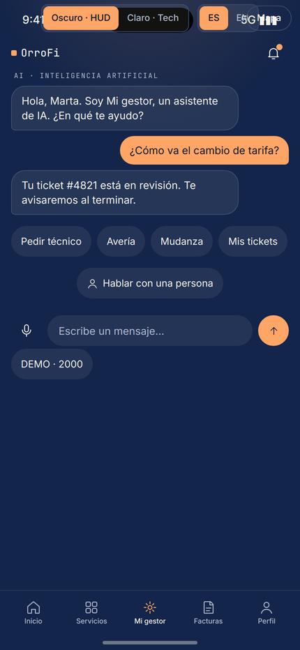
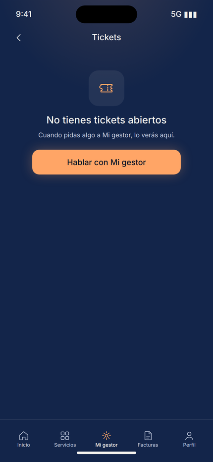

Разговор с Mi gestor
Mi gestor сразу говорит, что он искусственный интеллект, и отвечает коротко. Рядом готовые вопросы и кнопка «Поговорить с человеком» («Hablar con una persona»), если нужен сотрудник.

Mi gestor отвечает коротко, умеет слушать голос и, когда нужно, зовёт сотрудника. Заявки остаются в одном списке.
Mi gestor сразу говорит, что он искусственный интеллект, и отвечает коротко. Рядом готовые вопросы и кнопка «Поговорить с человеком» («Hablar con una persona»), если нужен сотрудник.

Сообщение не влезло. Приложение просит сократить его и отправить уже в таком виде.

Вопрос можно надиктовать. В первый раз приложение спросит разрешение на микрофон.
Микрофон запрещён, и говорить не получится. Остаётся клавиатура, разговор из-за этого не обрывается.
Открытые и закрытые обращения в одном списке. Видно, что ещё в работе, а что уже доведено до конца. Номера на кадре вымышлены.

Разговор можно отдать сотруднику и остаться в чате. Для него готовится короткое содержание, чтобы не пересказывать всё сначала.
История переписки хранится в течение срока, указанного в политике конфиденциальности.

Сотрудник сейчас не на связи. Оставьте заявку в чате: вопрос дождётся ответа.
Обращений пока нет, и пустой список здесь честный. Когда заявка появится, она ляжет на это место.
